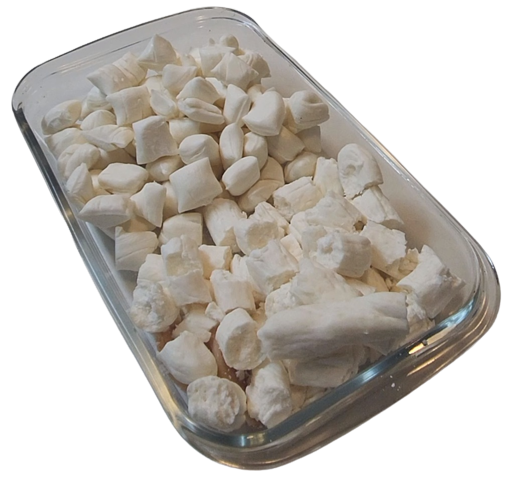

Bala de Coco
Essa receita de bala de coco é simplesmente deliciosa. A Bala de coco é um dos docinhos mais simples que existem: é apenas açúcar e leite de coco. Mas exige técnica no cozimento da calda de açúcar e na hora de puxar. É fácil, mas precisa de uma atenção especial em todas as etapas.
Curiosidade: Essa ai eu ajudei no preparo! ♥
Modo de preparo
Ingredientes:
- 200 mL leite de coco integral
- 200 mL de água
- 1 kg de açúcar refinado
- 1 colher de vinagre
- 15-20 g manteiga sem sal
Modo de preparo:
- Limpar muito bem uma superfície de granito e untar muito bem com o manteiga sem sal, deixado um pouco para untar as mãos depois.
- Numa panela alta adicionar leite de coco e açúcar refinado. Misture para umedecer todo o açúcar. Limpar as laterais da panela com pincel e água para retirar eventuais cristais de açúcar.
- Levar ao foto médio-alto, cozinhar por cerca de 10-15 minutos depois que começar a ferver.
- Cozinhar até o ponto de bala dura.
- Despejar sobre a superfície de granito preparada. Verta a calda de uma baixa altura, bem próxima da mesa.
- Deixar esfriar por alguns minutos, cerca de 5 minutos.
- Esticar a bala até ficar num tom de pérola/branco.
- Então, cortar o cilindro com uma tesoura no tamanho desejado. Deixar as balas espaçadas.